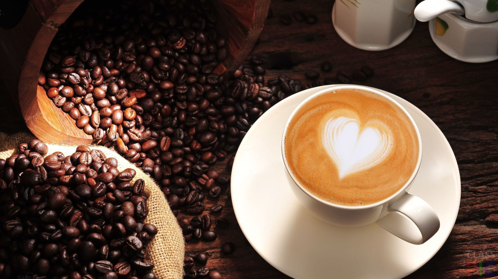
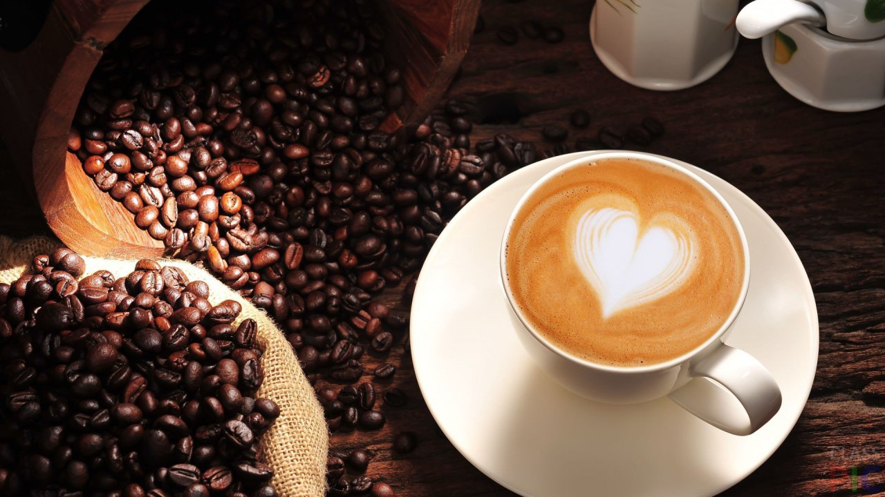

Добавки к кофе
Классический черный кофе – выбор ценителей: обычные люди предпочитают разнообразить вкусы любимого напитка, делать его более нежным или резким в зависимости от настроения.
Сахар. Даже если вы предпочитаете чай и кофе без сахара – стоит хоть раз попробовать немного подслащенный напиток. Достаточно четверти чайной ложечки сахара на чашку, чтобы смягчить напиток и слегка оттенить природную горчинку.
Молоко или сливки. Молочные продукты придают кофе нежность – и чем выше процент жирности молока, тем насыщеннее получается букет напитка.
Специи или пряности. Натуральные ароматизаторы (корица, гвоздика, ваниль, кардамон и пр.) придают кофе новые оттенки вкуса и аромата, полностью меняют букет напитка.
Мед. Природный подсластитель может заменить сахар и обогатить аромат напитка. Многие любители добавляют мед в чашку, но лучше наслаждаться им в виде десерта – при температуре свыше 650С мед теряет все полезные свойства.
Вода. Во многих кофейнях к чашке крепкого кофе традиционно подают стакан с водой. В этом случае кофе пьется маленькими глотками и чередуется с водой – чтобы уменьшить горечь и омыть вкусовые рецепторы.
Алкогольные напитки. В кофе можно добавить пару ложечек крепкого алкоголя (коньяк, бренди, бальзам) или ароматного ликера. Учитывая, что температура кипения спирта составляет около 800С – в свежем горячем кофе алкоголь почти полностью испаряется, оставляя богатое послевкусие и аромат напитка.
Когда и как следует пить кофе
Чтобы кофе стал полезен и оказал максимально благотворное действие на организм, пить его лучше в первой половине дня, ведь именно в этот период организм особенно нуждается в заряде бодрости. Тем, кто любит попить кофейку несколько раз в день, следует делать перерыв между приемами как минимум в 1-2 часа.
Пить кофе лучшим горячим, но если он и остыл, подогревать его или разбавлять теплой водой не рекомендуется. Употреблять его следует небольшими глотками, что позволит в полной мере насладиться его вкусом и ароматом.
Перед сном лучше воздержаться от приема кофе, так как он может вызвать бессонницу. Ведь кофеин приведет организм в состояние возбужденности, ускорит сердцебиение. В результате с утра вы будете чувствовать себя совершенно вымотанными и разбитыми.
Также не рекомендуется пить кофе на голодный желудок, ведь это может стать причиной появления язвы желудка или, как минимум, изжоги. И если с утра вы не испытываете желания поесть, следует хотя бы слегка перекусить.
Соблюдайте меру, а также простейшие предосторожности в употреблении этого напитка, чтобы иметь возможность наслаждаться им как можно дольше без вреда для здоровья.
Кофейные традиции в Италии
В Италии чтут традиции, поэтому в барах и ресторанах вы сможете заказать многочисленные кофейные напитки или кофе-эспрессо. Будьте уверены в том, что найдете их в меню в любом регионе Италии: от Рима до Санторини.
Выпивание чашечки эспрессо в местном баре – это ритуал, который соблюдает все работающее население страны: несколько минут релаксации и отрешения от рабочей рутины.
Именно здесь, в Италии, был создан рецепт столь любимого многими кофеманами капучино. На этой же земле появился и знаменитый эспрессо. Для итальянцев кофе стоит в одном ряду с другими исконно средиземноморскими продуктами, такими как помидоры, сыр, паста, божественное оливковое масло.
Практически невозможно встретить итальянца, который не любит кофе. Этот восхитительный напиток пьют все: от трехлетнего крохи до 80-летнего почтенного синьора. Итальянцы верят в чудодейственность кофе, поэтому в течение дня пьют его литрами. Как правило, утро в семье начинается с того, что хозяйка дома варит капучино, днем выпивается несколько чашек крепкого черного кофе, после рабочего дня в баре в хорошей компании приходит время насладиться бодрящим эспрессо.
Растворимый кофе итальянцы не признают, здесь это считается моветоном. Вас не поймут, если в гостях попросите вместо натурального кофе, сваренного в медной турке, этот напиток. Баночки с растворимым кофе вы не найдете в Италии ни на одной кухне уважающей себя хозяйки. По убеждению итальянцев, только свежесваренный кофе способен доставить истинное наслаждение.
На главную

 
